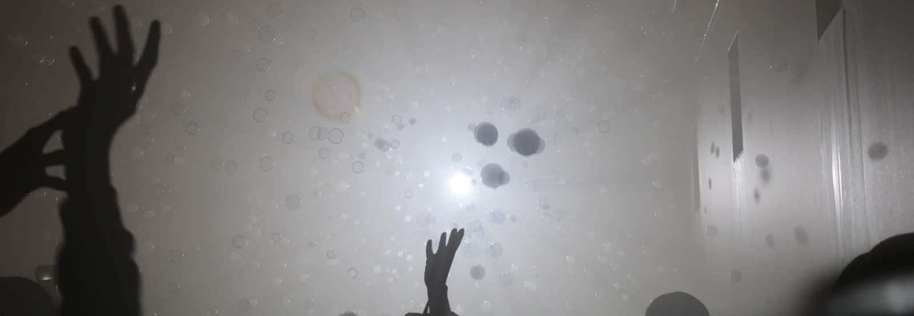
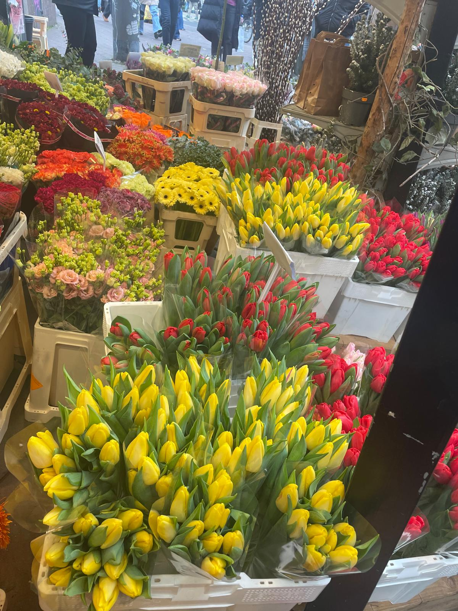
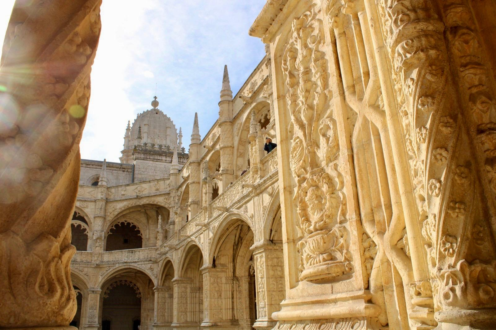
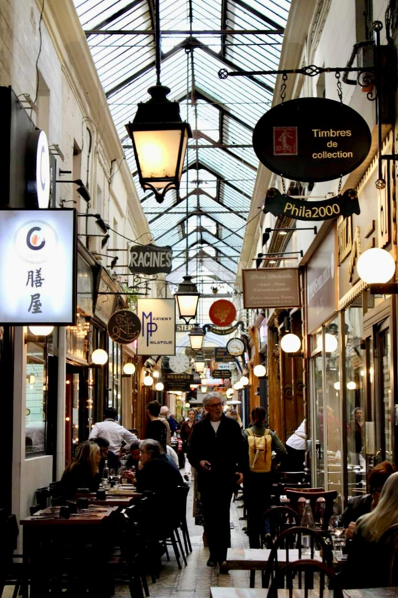
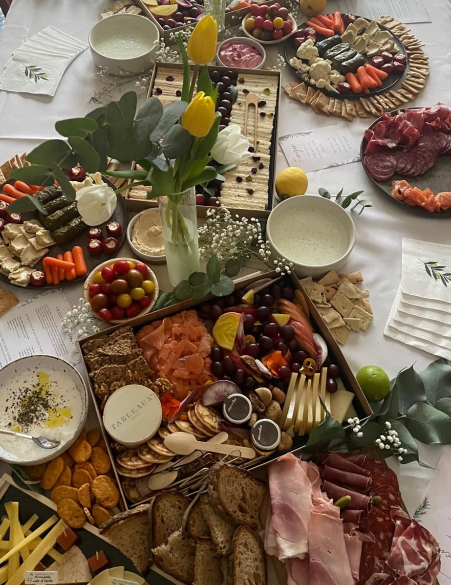
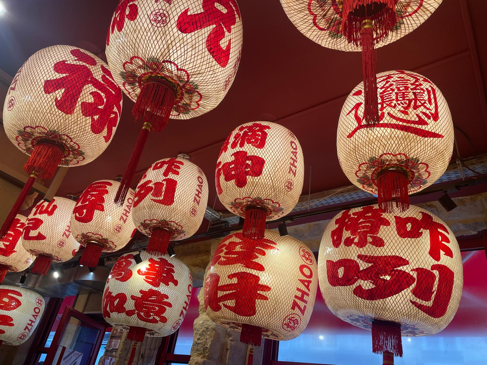
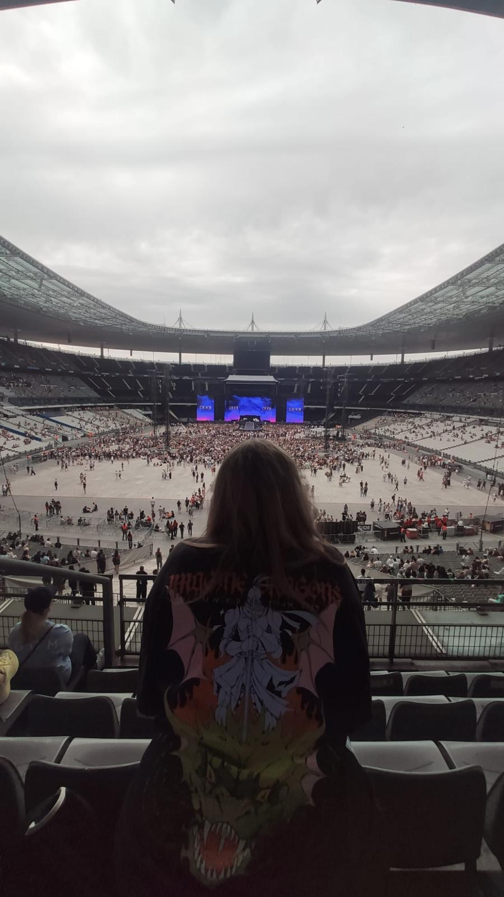
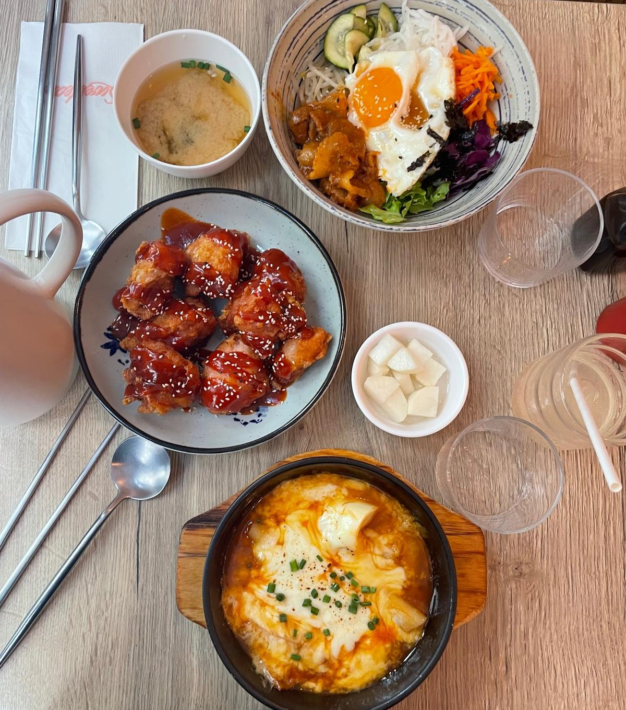
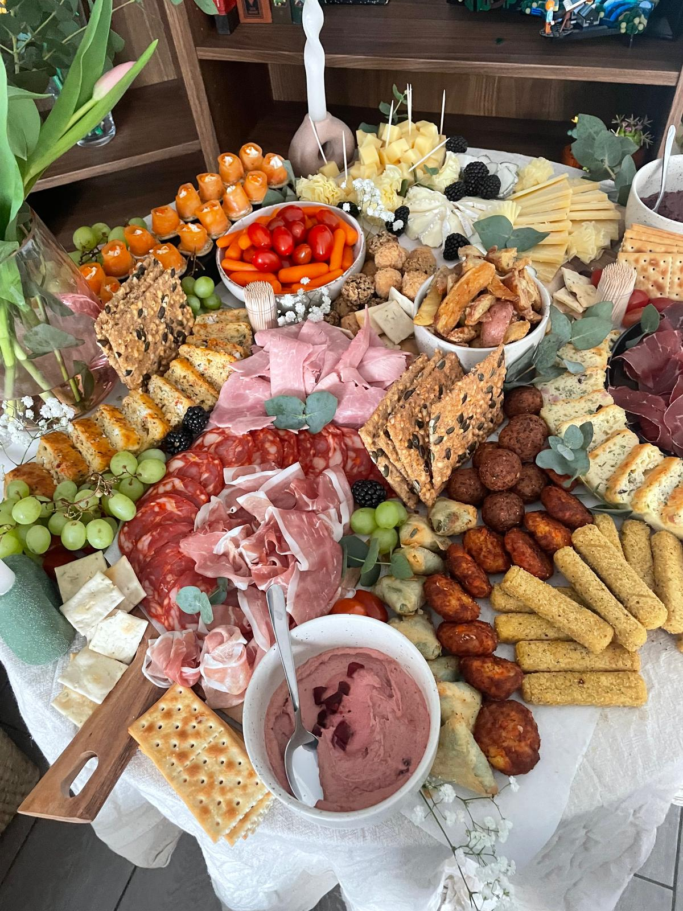
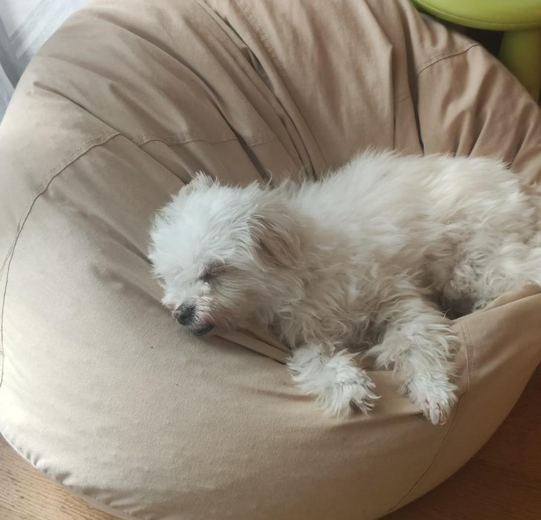

Qui suis-je ?
Ingénieure curieuse, touche-à-tout passionnée
Ingénieure généraliste formée à l'ESME et double-diplômée en Robotique à Heriot-Watt University (Édimbourg), je me situe à l'intersection entre le software embarqué, le développement logiciel, la R&D et les systèmes physiques.
Ce qui me motive : transformer une idée ou un besoin client en solution concrète et fonctionnelle. J'aime comprendre le problème dans sa globalité, puis concevoir et implémenter la solution la plus adaptée. Ce que j'apprécie particulièrement c'est la programmation : c'est un challenge intellectuel, mais aussi un moyen de matérialiser une idée en un produit concret.
Je suis passionnée par l'innovation et la technologie, mais je garde toujours à l'esprit l'impact humain et sociétal de ce que je développe. Je m'efforce de créer des solutions qui sont non seulement techniquement solides, mais aussi utiles et responsables.
J'ai toujours adoré apprendre de nouvelles choses et relever des défis, seule ou avec des personnes expérimentées. Le fait de chercher une solution avec des compétences que j'ai ou pas encore acquises est un moteur pour moi. J'aime me plonger dans des sujets complexes, les décortiquer et en tirer des solutions concrètes. C'est ce qui me pousse à explorer différents domaines de l'ingénierie et à m'adapter rapidement à de nouvelles technologies ou même evironnements techniques. C'est comme ça que j'ai pu travailler sur des projets très variés et apprendre de nouvelles compétences, comme la robotique ou encore le développement web et logiciel.
Parcours
- Web (HTML, CSS, JavaScript, ReactJS)
- R&D dans le cadre de petite/moyenne entreprise (CIR et méthodes associées)
Ce que j'apporte à une équipe
Compétences techniques
« La connaissance s’acquiert par l’expérience, tout le reste n’est que de l’information. »
— Albert Einstein
Langages de programmation
Domaines d'expertise
Ma boîte à outils










La personne derrière l'ingénieure,
Sandra, version non-compilée
En dehors des branches Git et des schémas d'architecture, j'ai une vie qui déborde dans tous les sens — et c'est exactement comme ça que j'aime. Présidente du Bureau des Arts à l'ESME, j'ai appris que gérer des gens passionnés est souvent plus complexe que déboguer un système embarqué.
La photographie est mon autre langage. Pas le filtre Instagram d'une seconde, mais vraiment chercher la lumière, le cadre, l'instant qu'on ne voit qu'une fois. C'est une façon de ralentir que j'ai apprise, entre mes voyages et mes cours.
J'ai un faible pour les jeux de société et les jeux vidéos, surtout ceux qui racontent une histoire ou demandent gestion et exploration. J'aime les jeux qui me font réfléchir, mais aussi ceux qui me font rire — et j'ai un faible pour les jeux coopératifs.
Un autre langage par lequel je m'exprime : la musique. J'ai joué du piano pendant 7 ans (mais ne me demandez pas de jouer autre chose que "Au clair de la lune"). J'essaye d'aller à des concerts dès que je peux. J'écoute -et chante- de tout, et j'aime m'immerger dans mes playlists pendant des heures quand je travaille, que je joue, ou que je m'occupe de mes 25 plantes ! C'est mon côté multitâche !
Le reste du temps, je lis — romans, essais, tout ce qui me sort de mon domaine. Je dessine quand une idée ne trouve pas d'autre sortie. Je cuisine en improvisant, mais surtout en adaptant la recette d'origine à ma sauce. Je voyage dès que l'occasion se présente, avec une vraie curiosité pour les langues et les manières de vivre qui ne ressemblent pas à la mienne.
La musculation est un rendez-vous que je prends avec moi-même : l'effort régulier, le progrès mesurable, la discipline choisie — pas si éloigné de ce que j'aime dans l'ingénierie, finalement. Et au bout de la journée, mon chien s'en fiche que j'aie eu une bonne réunion ou non. C'est assez sain.
Ce que toutes ces choses ont en commun : j'y cherche la même chose que dans mon travail — comprendre, créer, explorer, et surtout, m'amuser. Parce que si on ne s'amuse pas dans ce qu'on fait, on rate une partie essentielle de la vie.